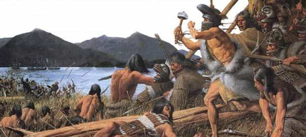

Andrew is a US Army Infantryman, Traditionalist, Red Pilled, and occasionally give in to the Black pill. He is an avid hunter, outdoorsman, and (real) country music fan. He currently resides in the great city of Nashville.


Deer hunting is a culture-based hobby. It is ideally introduced at a young age to the lucky few whose family either grew up in or currently reside in the rural parts of the United States. It teaches you hard work, following through with a plan, respecting life and death, understanding masculine activities, competing against yourself to achieve your highest capabilities, and the hunter-gatherer mentality.
Around the ages of seven to thirteen, one is usually introduced to deer camp, shooting, and the world of hunting large deer. Prospective hunters are brought into a culture dominated by the yearly event of men leaving their wives for a week or two in order to drive into the middle of nowhere, sit around a camp fire, drink beer and whiskey, discuss weapon choices for killing deer, play poker, and generally just shoot the shit with like-minded family and friends.
The difference between this and a social club is that this phenomenon is centered upon the hope that you will have a successful hunt and return home to a wife that cooks your game and delights in the fact that her husband is one of the select few who can show her that he is capable and willing to provide for her and his family in the simplest form.
In a hunter’s mind, there is nothing sexier than a woman who can cook his game efficiently and finds happiness in feeding her family with the healthiest form of meat currently available in the United States. It is a truly amazing thing that represents a family’s ability to respect traditional roles and a feeling of security that they can survive in a non-contemporary society if need be. Deer hunting is the closest a modern man can get to experiencing the hunter-gatherer lifestyle.
I remember my first time at deer camp at the age of fifteen. My grandfather asked me if I wanted to go with my uncles, cousins, and him. I enthusiastically accepted and looked forward to it all summer long. I remember laying out all of my hunting gear and preparing the 30-30 Marlin hunting rifle handed down to me by my father. During these countless hours, I learned my first lessons in deer hunting; taking the initiative, setting a goal, and seeing it all the way through.
When I arrived at camp, I was delighted to see my family. I imagine I had a gleam in my eye that they could relate to when they were my age. I was immediately put to work chopping firewood my first afternoon. This was an important moment and symbolized that I was not only expected to carry my own weight, but also stated that they considered me one of them and not just some young boy who needed to be cradled.
We sat around the fire, cooked baked potatoes, and ate steak. In the evenings, we played poker with a sack of quarters while all of us competed for the coveted fifty-cent piece. When we arose in the morning in the cold and dark, I drank my first cup of coffee with a smile, looked out into the woods, and imagined the record bucks that we would all have hanging from the camp pole.
Although that didn’t happen for me that year, the actual result of being successful my first year at camp really didn’t make a difference. I came home from that trip forever hooked on deer hunting and a solid appreciation for my fellow man. It was a right of passage that had to be earned, and it was one of the greatest moments in my life.

As time has gone on, I have been extremely lucky to have successfully hunted and killed multiple deer—as well as many trophy bucks—over the course of my life. It has become an obsession of mine and I wouldn’t trade it for the world. As I became a more experienced hunter, I have leased many different properties and hunted family land. I have prepared properties for deer by running farm machinery, planting crops, and reaped what I have sown with my hard work.
Every year, I look forward to hunting season and proving my skills to myself and other hunters within my hunting world.
In conclusion, deer hunting is a hobby that every man should explore. Almost every state within the U.S. has available hunting land, and with a little research, you should easily be able to go out and hunt. If this article draws any interest, I will follow up with specifics on how to kill deer successfully without the help of anyone.
Read More: 5 Reasons Why Every Man Should Go Hunting Once In Their Lifetime